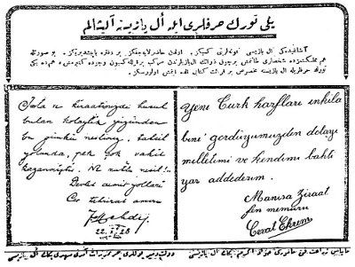

VAKIT
26 Teşrinievvel 1928 Cuma
Yeni Türk Harfleri ile Yazınız, Alışalım
"Aşağıdaki el yazısı numunelerini kesiniz. Hazırlayacağınız bir deftere yapıştırınız. Bu suretle hem memleketimizde şahısları tanınmış bir çok devlet adamının el yazılarından mürekkep bir koleksiyon meydana getirmiş, hem de yeni Türk Harfleriyle el yazısına mahsus bir kıraat kitabı elde etmiş olursunuz."

“Devlet Demiryolları Cer Tahrirat Amiri Mehdi Beyin el yazısı” ve
“Manisa Ziraat Fen Memuru Cevat Ekrem Beyin el yazısı”